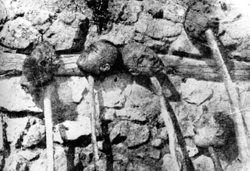
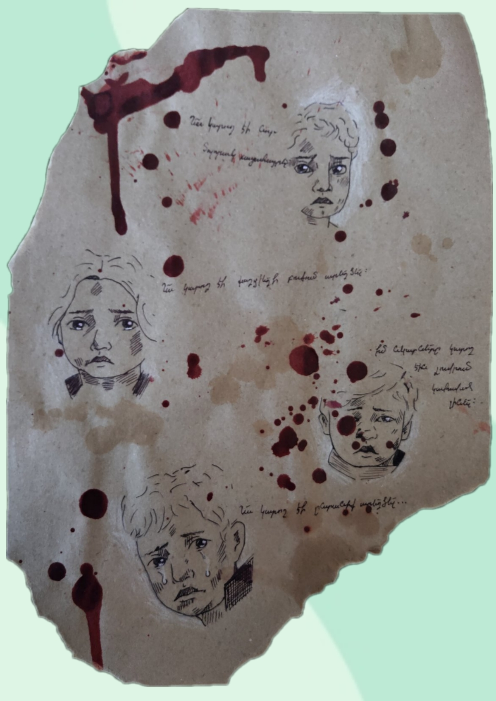
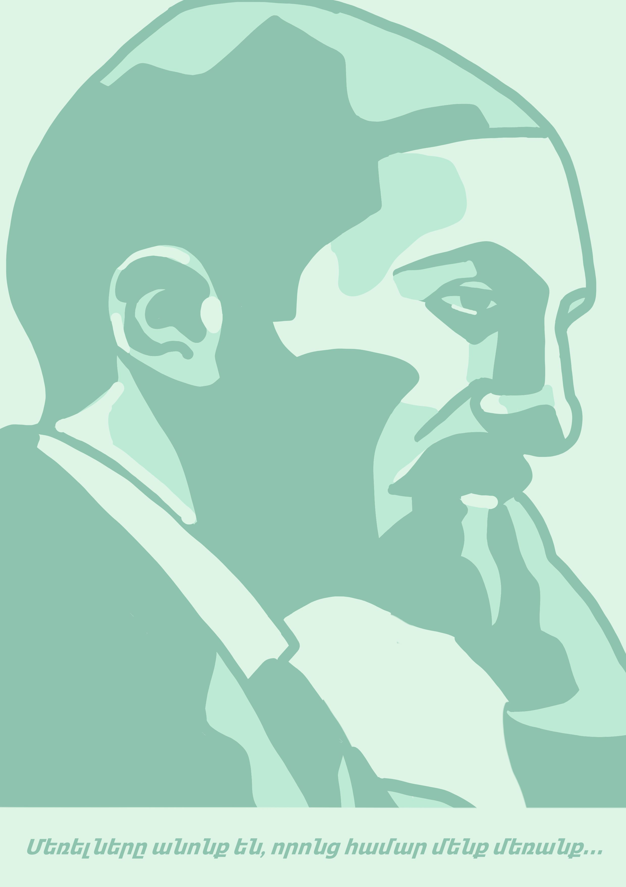
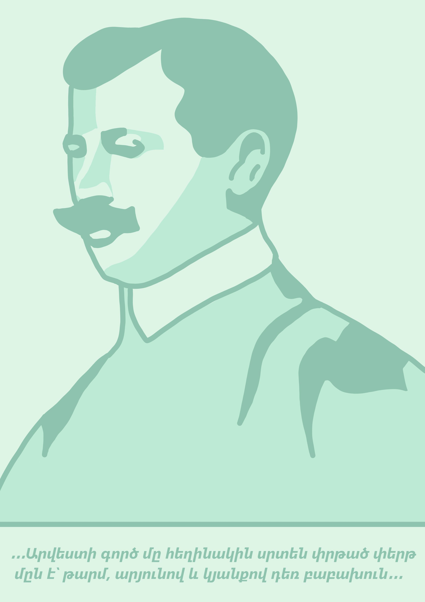
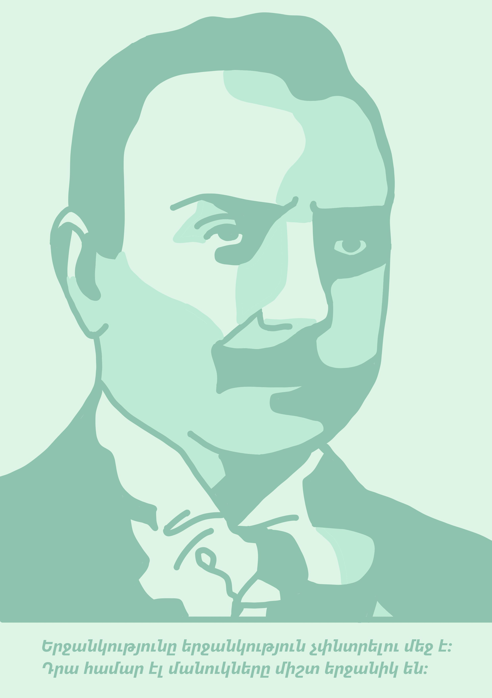

1915-1923թթ. Հայոց ցեղասպանությունը
Սովահար հայ կինը իր որդու հետ սիրիական անապատ, 1916թ.
Հայերի կոտորածը Կոստանդնուպոլսում, 1915թ. հունիս
Գաղթականների տեղահանում Ռուս զինվորական լուսանկարիչ Պառախոդովի հավաքածու
Թուրքական զորքերի կողմից կենդանի այրված հայերը Շեյխալան գյուղում, 1915 թ.

Գլխատված հայերը
Գլխատված հայերը
Հայ գաղթականներ Ռուս զինվորական լուսանկարիչ Պառախոդովի հավաքածու
Կոտորածից և ավերումից հետո ավերակների վերածված Շուշի քաղաքի հայկական թաղամասի համայնապատկերը, 1920թ.
1909թ. Ադանայի ջարդեր
Ադանայի ոչնչացված հայկական թաղամասը Գերմանական աջակցության միության արխիվ Tessa Hofmann & Gerayer Koutcharian, Armenian Review, Spring/Summer, 1992
Երեք հազարից ավել հայ փախստականներ ապաստան են փնտրում Բախչիեի (Կիլիկիա) բողոքական եկեղեցում Գերմանական աջակցության միության արխիվ Tessa Hofmann & Gerayer Koutcharian, Armenian Review, Spring/Summer, 1992
Հայ կինն Ադանայից` տանջահար արված և դանակի վերքերից այլանդակված Էրնստ Եկխ, Ծագող Կիսալուսին: Թուրքական Վերածննդի հարցեր Tessa Hofmann & Gerayer Koutcharian, Armenian Review, Spring/Summer, 1992
Ադանա. փլատակներն ու կողոպտված պահոցները հայկական թաղամասում Գերմանական աջակցության միության արխիվ Tessa Hofmann & Gerayer Koutcharian, Armenian Review, Spring/Summer, 1992
Ադանայի փլատակները (Կիլիկիա), 1909
1894-1896թթ. Համիդյան կոտորածներ

Սասունի կոտորածը (1894թ. օգոստոս) Նկարիչը մեծ ջանքեր է գործադրել` Հայաստանի հարավային շրջանների ավանդական տարազը, հատկապես կանացի, վերարտադրելու համար Շաբաթօրյա ակումբ (Նյու Յորք) Tessa Hofmann & Gerayer Koutcharian, Armenian Review, Spring/Summer, 1992
Հայերի կոտորածը Կոստանդնուպոլսում, 30 սեպտեմբերի 1895թ. Արևելքում քրիստոնեական բարեգործական աշխատանքի գերմանական աջակցության միության գրքից (Deines Bruders Blut: Eine Geschichte Aus Armeniens Leidenstagen, with a prologue and epilogue by director F. Schuchardt. 21st edition, Schwerin in Mecklenburg: Friedrich Bahn, 1926) Tessa Hofmann & Gerayer Koutcharian Armenian Review, Spring/Summer, 1992
“Հարձակում հայերի վրա սոֆթաների (հոգևոր ուսանողներ) կողմից սբ. Սոֆիայի մոտ” Հայերի կոտորածը Կոստանդնուպոլսում Ս.Ջ. Ստանիլենդ, ականատեսի նկարագրությունից The Graphic, 26 Oct. 1895, p.515 Tessa Hofmann & Gerayer Koutcharian, Armenian Review, Spring/Summer, 1992
Հայերի կոտորածը Սոֆտաների կողմից հայերի սարսափելի կոտորածի ականատեսի նկարագրությունը (Մոլեռանդ մուսուլմանական ուսանողները սբ. Սոֆիայի մոտ) Աղբյուր` «Թուրքիան և հայկական դաժանությունները», գերապատվելի Էդվին Մ. Բլիս Edgewood Publishing Company, 1896, p. 432
Էրզրում, Հայկական բարձրավանդակն արևելյան Անատոլիայում: Սուլթան Աբդուլ Համիդ 2-րդի գահակալման ժամանակաշրջանում 1895թ. հոկտեմբերի 30 հայկական կոտորածների զոհերի հուղարկավորությունը 1894-1896թթ. այս կոտորածներին զոհ են գնացել 200.000-ից 300.000 հայ (Informations and Dokumentationszentrum Armenien, Berlin) AGBU, April 1999, p. 24
© Նանե Մելքումյան



